| 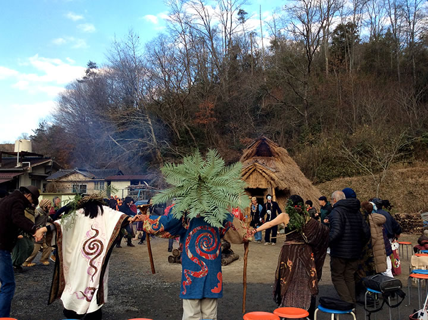 |
| （画像をクリックで拡大します） |
縄文式竪穴住居「縄文 大地の気場庵」が猪風来美術館の広場に、一年がかりで完成しました。
（2016年9月～2017年9月）
昨秋よりの茅の収集をはじめ、春の木材の切り出し・皮むき、夏炎天下の茅葺きなどの作業に延べ235人の
方々のご協力があり、また資材や道具の提供、お志などが寄せられました。
この「気場庵」は、冬至の日没の太陽の光が入口から入り炉の中心に射しみ、一年中で最も弱まった太陽を
大地の子宮たる穴居に抱き太陽の復活を祈るように建てられています。
そして、完成して最初の冬至を迎えるこの日に、建設に協力いただいた方々をはじめとする参加者が集い、
悠久の時を越えて縄文の心に感応する『縄文冬至祭り』が行われました。
| 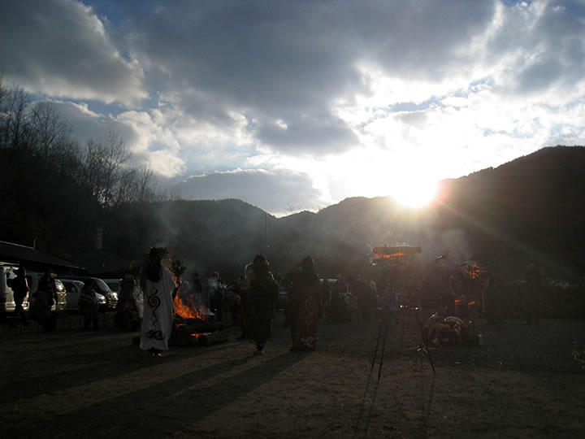 |
| （画像をクリックで拡大します） |
=∴=∵=∴=∵=∴=∵=∴=∵=∴=∵=∴=∵=∴=∵=∴=∵=∴=∵=∴=∵=∴=∵=∴=∵=∴=∵=∴=
《第一部》 講演会『縄文の住居・ムラ・世界観』
◎講演者 松本直子氏（岡山大学考古学研究室教授）
（縄文社会を主なフィールドとして認知考古学およびジェンダー考古学の視点から研究を進める。
考古学の新たな視点から縄文の心に迫るトップランナー）
今回の講演では、認知考古学の観点からの最新の縄文研究の知見が提示されるとともに、質疑応答の時間では
出席者の意見/疑問に応える形での縄文論の交流の場に。
縄文の精神文化の実像へと迫る、考古学とアートが連携する新たな可能性を感じさせる機会となりました。
| 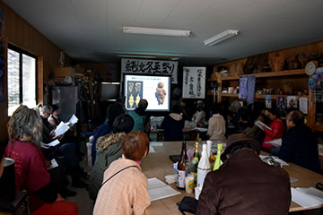 | 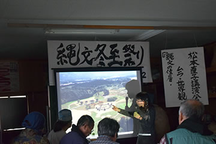 |
| （画像をクリックで拡大します） | |
=∴=∵=∴=∵=∴=∵=∴=∵=∴=∵=∴=∵=∴=∵=∴=∵=∴=∵=∴=∵=∴=∵=∴=∵=∴=∵=∴=
《第二部》 「縄文大地の気場庵」前広場にて
１ 火おこしと冬至の日の入り迎えの儀式
２ 穴居の火を広場の炉や篝火に点火
縄文太鼓の演奏（乙倉 俊）・祈りの女舞
３ 楽器と舞が加わりセッション
参加者皆で大地を踏むラウンド・ダンス
第二部は火おこしから始まり、日の入りの陽光と炉の炎とが合一する瞬間を迎えます。
そして、猪風来によるペウタウンケ（神呼びの叫び）で演奏と舞いが幕を開けました。
縄文太鼓の音が谷間にこだまし、草冠を纏った三女性の舞いが太陽と大地を繋ぎます。
さらに舞踏家たちのダイナミックな舞いと、シャーマニックドラムやインディンフルートの調べが加わり、
最後は皆が参加してのラウンド・ダンスによって渾然一体となる大地への祈り。
縄文スピリットと大地の思考に感応する人達が心を一つに結び、現代に縄文時空が開くひとときとなりました。
| 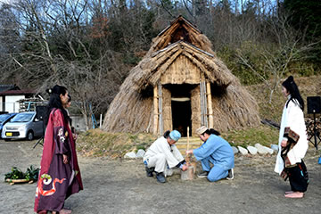 | 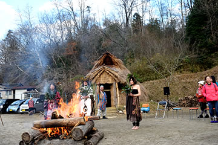 | |
| 【火おこしとペウタウンケ】 | ||
| 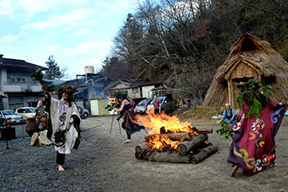 | 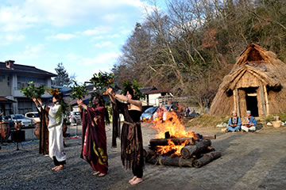 | |
| 【小野真由美・荒川悠・戸田貴子による三女の舞い】 | ||
| 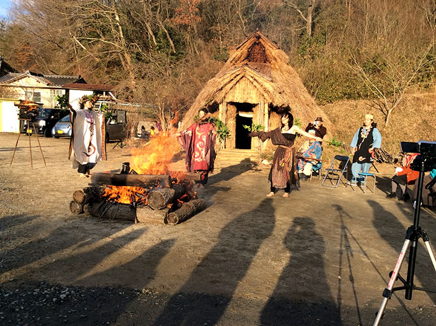 | ||
| （画像をクリックで拡大します） | ||
| 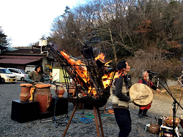 | 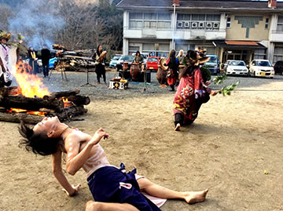 | |
| 【赤田龍太郎によるシャーマニックドラム演奏】 | 【舞踏家 黒瀬公浩の縄文の舞い】 | |
| 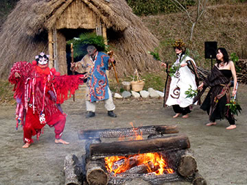 | 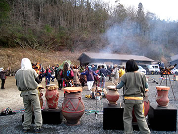 | |
| 【大地の子宮の化身に扮した小山麻衣子の舞踏 （衣装協力：三宅典子）】 |
【乙倉俊・井口さおり（beZen鼓空） による縄文太鼓の演奏】 |
|
| 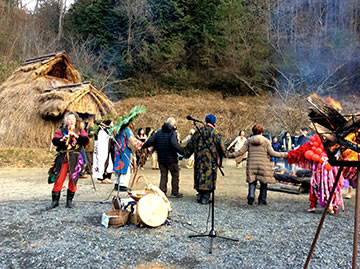 | 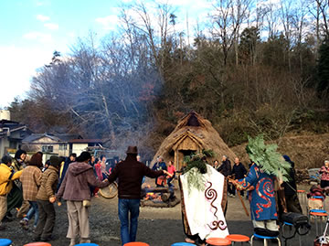 | |
| 【とろん の奏でるインディアンフルート】 | 【皆で大地に祈りをささげるラウンド・ダンス】 | |
| 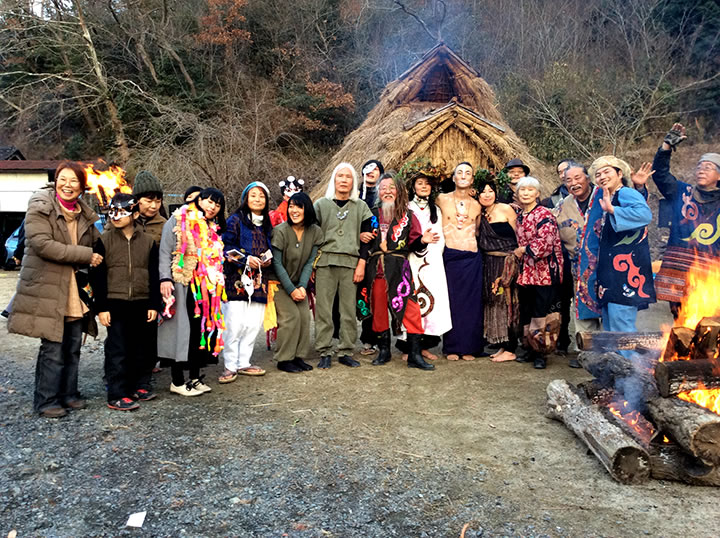 | ||
| （画像をクリックで拡大します） | ||
=∴=∵=∴=∵=∴=∵=∴=∵=∴=∵=∴=∵=∴=∵=∴=∵=∴=∵=∴=∵=∴=∵=∴=∵=∴=∵=∴=
《第三部》 懇親・懇談会（会食）
第三部では、ふたたび創作館に集まってテーブルを囲んでの懇親会。
縄文食（ドングリ粥）や熊肉、鍋、そして参加者が持ち寄っていただいた差し入れなどを囲んで舌鼓を打ち、
みなで汗を流した竪穴住居と縄文体験の話題に花を開かせました。
| 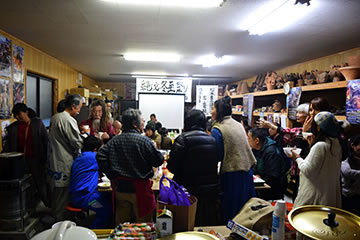 | 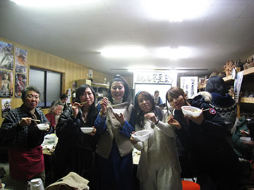 |
| （画像をクリックで拡大します） | |
（撮影協力：米本久美子）
=∴=∵=∴=∵=∴=∵=∴=∵=∴=∵=∴=∵=∴=∵=∴=∵=∴=∵=∴=∵=∴=∵=∴=∵=∴=∵=∴=
| 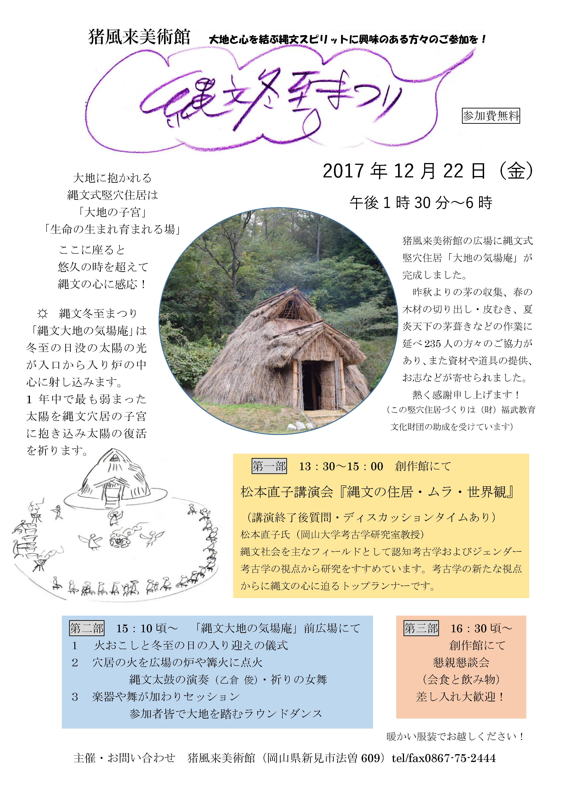 |
| 【縄文冬至祭り チラシ】 →PDF版を開く |
（この竪穴住居づくりは（財）福武教育文化財団の助成を受けています）